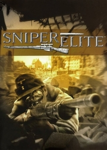

|  | |
| Tiempo de juego | No Jugado |
| Última actividad | Nunca |
| Añadido | 11/6/2024 14:41:31 |
| Modificado | 11/8/2024 17:35:32 |
| Estado de finalización | No Jugado |
| Librería | Playnite |
| Fuente | 6TB STORE |
| Plataforma | PC (Windows) |
| Fecha de lanzamiento | 9/30/2005 |
| Puntuación de la Comunidad | |
| Puntuación de la Crítica | 75 |
| Puntuación de usuario | |
| Género | stealth Tactical shooter |
| Desarrollador | Rebellion Developments |
| Editor | MC2 France MC2-Microïds Namco Hometek OS X PlayStation 2 Reef Entertainment Wii Windows Xbox |
| Característica | Multiplayer Single-player |
| Enlaces | Wikipedia MobyGames |
| Tag | [People] artist: James Fraser [People] artist: Mark Bradshaw [People] composer: Tom Bible [People] designer: Emerson Best [People] director: Christopher Kingsley [People] director: Jason Kingsley [People] producer: Emerson Best [People] programmer: Kevin Floyer-Lea [People] programmer: Kieran Donaldson |
Sniper Elite (also known as Sniper Elite: Berlin 1945) is a 2005 third-person tactical shooter stealth video game developed by Rebellion Developments and published by MC2 France in Europe and by Namco Hometek in North America, in 2005. In 2012, to coincide with the release of Sniper Elite V2, it was re-issued through Steam by Rebellion itself.
The protagonist of Sniper Elite is Karl Fairburne, a German-born American OSS operative disguised as a German sniper. He is inserted into the Battle of Berlin in 1945 during the final days of World War II, with the critical objective of preventing German nuclear technology from falling into the hands of invading Soviet forces.
Sniper Elite is a third-person shooter that combines stealth and first-person shooter game elements. To reinforce the stealth aspect, there is a camouflage index, measured in percentage, that displays the visibility of the player. Fairburne uses several World War II-era weapons, including various sniper rifles, a silenced pistol, submachine guns, light machine guns, an anti-tank weapon, and hand grenades that can also be used to set up tripwire booby traps.
One of the main features of the game is the option of realistic ballistics, involving factors such as bullet drop, wind strength, and breathing when attempting a shot. Sniping gameplay is performed in first person scope view, whereas movement and use of all other weapons is in third person view. When the player successfully takes a particularly well-placed sniper shot (such as a head shot or a shot on a moving target), the view follows the path of the bullet in slow motion, while the camera rotates around the bullet.
Other features include the ability to wound an enemy so that their comrades are forced to come to their rescue and thus expose their positions for sniping, detonating enemy grenades and fuel tanks with well-aimed bullets, and timing shots so that loud noises such as thunder or artillery blasts mask the sound and thus avoid alerting nearby enemies.
In April 1945, as Berlin is slowly encircled by rival American and Soviet armies, Karl Fairburne, an agent of the American OSS, is deployed into the ruins of the city wearing the uniform of a German soldier. His superiors have tasked him with thwarting efforts by the Soviet Union to obtain information, personnel, and technology from the German nuclear weapons program. Very little information is revealed about Fairburne's background, other than he was raised in Berlin before the war broke out, that he studied at West Point shortly after America's entrance into the war, and the fact that he was primarily chosen for the mission because he's familiar with the city's geography and can easily blend in with Berlin's defenders.
There are several factions active in the city, including the German resistance, who assist Karl, the Soviet NKVD, who are working against him for access to the spoils of German nuclear research, and the remnants of the Nazi forces in Berlin. The historical Nazi official Martin Bormann, an extremely powerful figure within the Third Reich, is one of Karl's first targets for assassination as he plans to meet up with an NKVD contact at the Brandenburg Gate to defect to the Soviet Union (in real life, Bormann committed suicide rather than be captured by the Soviets). The rest of the characters (such as Dr. Max Lohmann, a key German scientist who Fairburne is assigned to help capture and escort out of Berlin to America in order to prevent him from falling into the hands of the NKVD) are fictional with the exception of George S. Patton, commander of the American forces assaulting Berlin, who is responsible for authorizing Fairburne's mission.
The Nintendo Wii version of the game was released by Reef Entertainment in North America in December 7, 2010. It is compatible with the Wii Remote and Wii Zapper and contains a bonus new level. The game was also released in Europe later the same year.
Sniper Elite received "generally favorable" reviews, according to review aggregator Metacritic.
The game was awarded "Best PC/Console Game" in the TIGA Awards of 2005.
Rebellion Developments' book imprint Abaddon Books released a novel inspired by the game, Sniper Elite: The Spear of Destiny written by Jasper Bark. In this book, Karl Fairburne's mission is to stop a rogue SS officer named Helmstadt from selling Germany's only working atomic bomb to the Soviets.